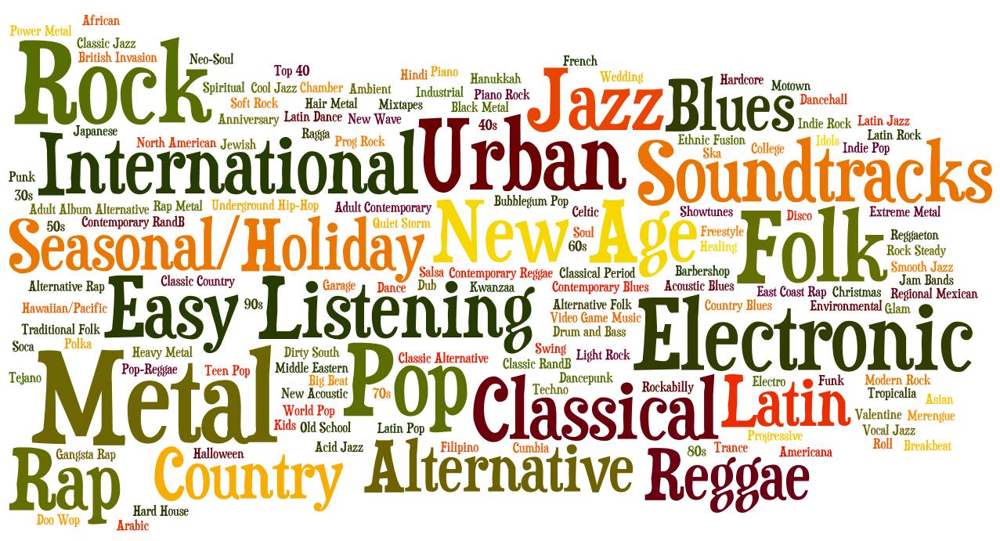
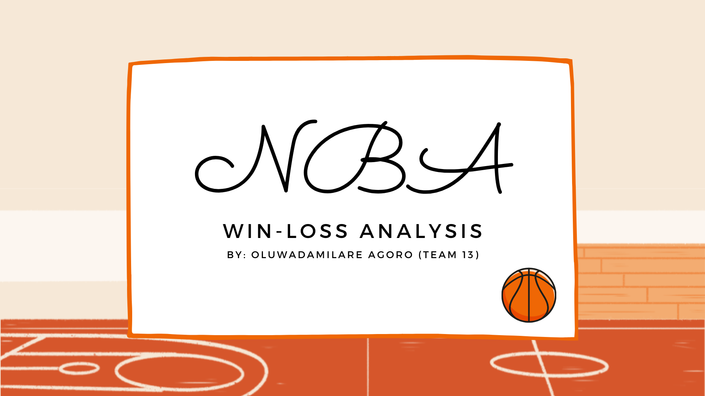

In collaboration with my professor at Hollins University, I led a data-driven project exploring whether closely related music genres—ambient, sleep, study, and chill—show meaningful mathematical differences. Using a Spotify dataset sourced from Kaggle, I applied both a discriminative model (Logistic Regression) and a generative model (Naive Bayes Classifier) to analyze and compare audio features across genres. Throughout the project, I strengthened key data science skills, including data cleaning, visualization, and statistical modeling—all performed in Python. This hands-on experience deepened my understanding of how real-world datasets can be used to uncover subtle patterns and guide meaningful insights.


During my internship at Wyndham Robertson Library, I had the opportunity to collaborate with my supervisor, James Miller, on analyzing student and faculty interactions with the library website. This experience allowed me to develop valuable User Experience skills, including card sorting, usability testing, and survey design—skills that I am eager to apply in my data analyst journey. Additionally, I enhanced my communication abilities by conducting interviews with over 30 students, many of whom were unfamiliar to me. This project not only honed my technical skills but also strengthened my ability to engage with diverse individuals effectively.

This is a personal project of mine where I got to learn how to use pivottable, slicers and charts to create an interactive dashboard on Excel. I analyzed a dataset detailing the Bike purchase history of an unnamed Mart.

In this project, I worked in a team to analyze an NBA dataset available on Kaggle using SQL, Excel, and Canva. Throughout this experience, I picked up some invaluable skills: mastering the art of coordinating with a team despite conflicting schedules, conducting insightful interviews with stakeholders to extract key information, and transforming raw data into actionable insights rather than just reporting numbers. It’s been a dynamic journey that sharpened my ability to turn challenges into opportunities and data into decisions!

This is a work in progess.

This is a work in progress.

This is a work in progress.